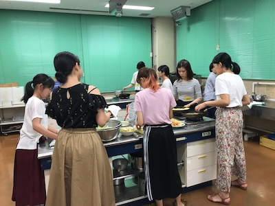
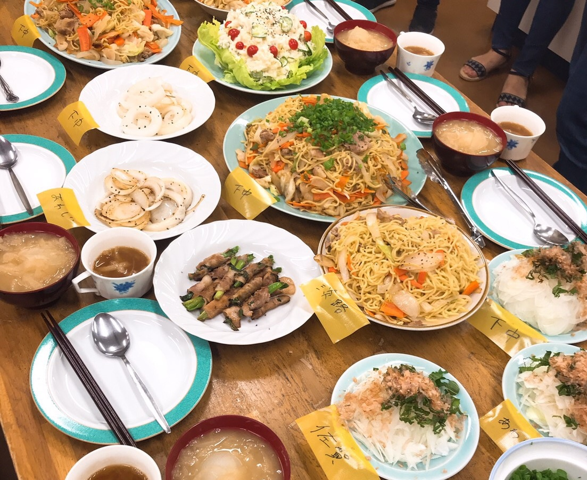
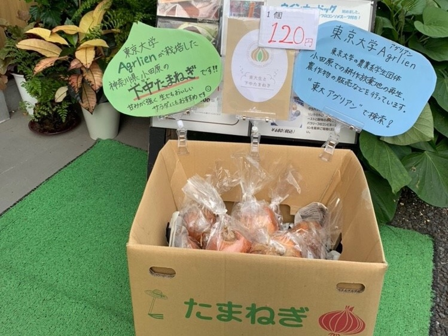

「下中玉ねぎ」料理イベントを開催しました！
2019.08.14 吉田
7月30日に「下中玉ねぎ」の料理イベントを開催しました。
遅ればせながら，報告させてもらいます。
「下中玉ねぎ」は，私たち東京大学Agrlienが、神奈川県小田原で育て収穫した，神奈川県小田原市のブランド玉ねぎです。（詳しくはこちら：http://www.agrlien.com/shimonaka.html）＊尚，今年のネットでの販売受付は終了しました。
今回は料理会ということで，東大スパイス部（https://twitter.com/ut_spice）からも2名参加して下さいました(^^)

気になるメニューは、
・玉ねぎ焼きそば（五月祭で販売したので作り方はバッチリ！）
・ポテトサラダ
・玉ねぎスープ（小さめの丸ごと玉ねぎ入り）
・玉ねぎの和風サラダ
・焼き玉ねぎ
の5品。

とても豪華な食卓に。
今回は、淡路産と佐賀産の玉ねぎも使って、3種類の玉ねぎを食べ比べてみました。
それぞれの良さや好みはありますが、下中玉ねぎは中でも特に甘みが強くて、みんなびっくり。
イベント後に集計したアンケートでも，下中玉ねぎが一番甘かったという意見が多く，特に玉ねぎスープや焼き玉ねぎのような，玉ねぎを主役にした料理にもってこいとのでした。
料理に応じて産地を使い分けてみるのも，面白いかもしれませんね。
自分たちで育てた野菜を、みんなで調理して美味しく食べる。とても幸せな時間でした。
今年の下中玉ねぎは終了してしまいましたが、次のサツマイモでも料理イベントができたら良いな、と思っています。
以上、簡単ではありますが「下中玉ねぎ」料理イベントの報告でした！
下中玉ねぎは，根津の「緑の本屋」さんなど，東大付近で店頭販売をしていますので，気になった方はぜひご賞味ください。

（吉田）